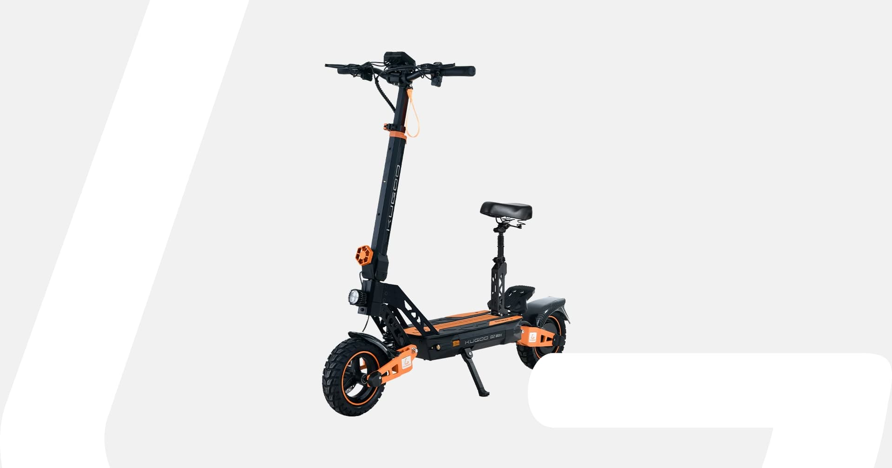
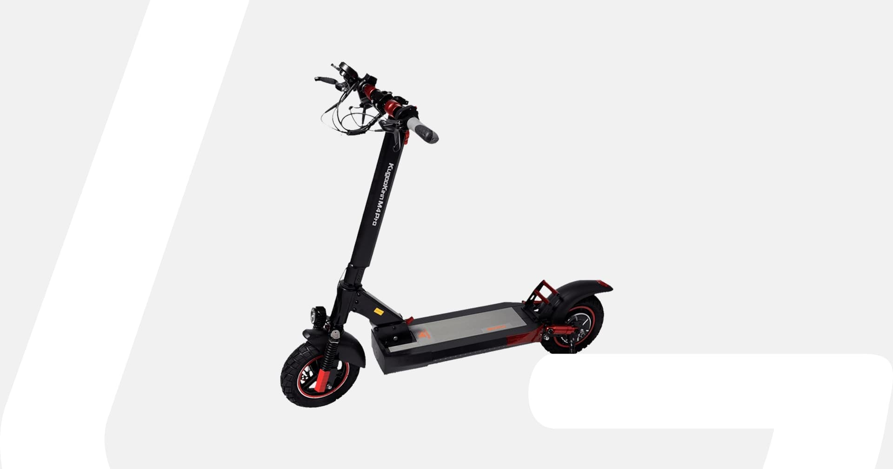
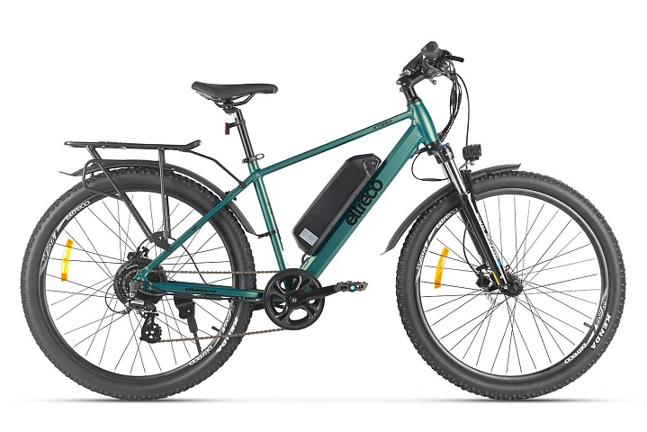

ПРОФИ СПОРТ / ЭЛЕКТРОТРАНСПОРТГород
МОДЕЛЬ В КАТАЛОГЕГород
в твоём темпе
Электротранспорт для каждого маршрута
Выбрать технику
KUGOO G2 Max800 Вт · до 60 кмПодробнее о модели
Электросамокаты

Выбрать самокатБольше маршрутовЭлектровелосипеды

Выбрать велосипедТВОЙ МАРШРУТ — ТВОЙ ВЫБОРПодбор.
Подбор.
Доставка.
Сервис.
От характеристик модели до условий получения — всё важное для выбора техники.
Открыть интерактивную панельКАТАЛОГ ЭЛЕКТРОТРАНСПОРТА
Найди свой электротранспорт
Больше свободы
в каждом маршруте
Запас хода указан как максимальный по данным поставщика и зависит от условий поездки. Цены проверены 05.10.2026. Итоговая цена ProfiSport, наличие и доставка требуют подтверждения.
Нужна помощь с выбором?
Начни с производителя и модели.
Сохрани подбор, чтобы обсудить технику в магазине.
Сравни характеристикиПроверь источник ценыУточни условия доставки